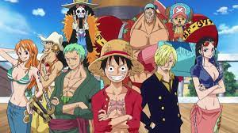
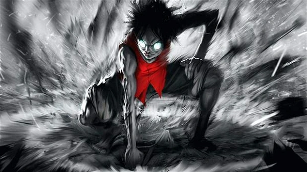
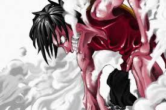

One Piece

One Piece (ワンピース Wan Pīsu?) é uma série de mangá escrita e ilustrada por Eiichiro Oda. Os capítulos têm sido serializados na revista Weekly Shōnen Jump desde julho de 1997, com os capítulos compilados e publicados em 105 volumes tankōbon pela editora Shueisha até junho de 2023. One Piece conta as aventuras de Monkey D. Luffy, um jovem cujo corpo ganhou as propriedades de borracha após ter comido um fruto do diabo acidentalmente. Com sua tripulação, os Piratas do Chapéu de Palha, Luffy explora a Grand Line em busca do tesouro mais procurado do mundo, o "One Piece", a fim de se tornar o próximo Rei dos Piratas.

Desde 1997, ano em que foi lançado, One Piece foi capaz de recrutar uma legião de fãs que acompanham as aventuras de Monkey D. Luffy e os Piratas do Chapéu de Palha atrás do grande tesouro. Mesmo depois de uma década de publicação, essa história ainda conquista cada vez mais novos aficionados.
Mas quem é Luffy? O que faz desse rapaz esquisito, de chapéu de palha e chinelo, alguém tão perigoso para o Governo Mundial?
.jpeg)
Quais são os poderes e fraquezas do Luffy?

Por conta da Fruta do Diabo que comeu quando ainda era criança, Luffy adquiriu alguns poderes especiais, capazes de torná-lo um dos mais perigosos piratas do mundo! Seu corpo tornou-se todo de borracha, garantindo a ele habilidades únicas.
Luffy é capaz de esticar seus membros a distâncias incríveis, usando essa característica para atacar seus inimigos. Ele consegue deixar seu corpo em formatos estranhos, conseguindo surpreender seus oponentes que são incapazes de prever de onde vem os ataques.
Além disso, no universo de One Piece, todos os seres possuem o Haki, uma energia que fica dormente e que só pode ser despertada depois de muito treinamento ou de um dom especial. Os Hakis são divididos em três tipos: o da Observação, que funciona como uma espécie de sexto sentido, o do Armamento, que cria uma espécie de armadura em volta do usuário, e o do Rei, um tipo extremamente raro, capaz de afetar a força de vontade das demais pessoas.
Depois de anos de treinamento, o Pirata do Chapéu de Palha desenvolveu algumas técnicas de combate que ele chamou de Gears. Cada Gear tem suas características próprias e possibilitam a ele tirar vantagens específicas dos seus poderes. A primeira Gear seria sua forma padrão. As demais se caracterizam por:
Segunda Gear: Luffy usa suas veias e borracha para bombear seu sangue por todo o corpo em um ritmo acelerado. Dessa forma, ele amplia sua força e velocidade de maneiras incríveis! No entanto, esse estado acaba consumindo muita energia, deixando o pirata exausto após usar a técnica.

Terceira Gear: Luffy bombeia ar entre os seus ossos para ampliar o seu tamanho e, desse jeito, conseguir atacar com ainda mais força. A desvantagem é que, desse jeito, ele perde mobilidade e fica do tamanho de uma criança pelo mesmo tempo em que ficou inflado
.jpeg)
Quarta Gear: O pirata cobre seus braços com Busoushoku Haki, uma espécie de armadura criada com sua energia vital. Ele também infla sua estrutura muscular, ganhando força e preservando sua elasticidade. Em contrapartida, Luffy é incapaz de ficar parado, precisando se movimentar o tempo todo e consumindo ainda mais energia
.jpeg)
Gear 5:No começo da aventura, ficamos sabendo que Luffy ganhou seus poderes de Homem-Borracha por ter comido a Gomu Gomu no Mi, mas a verdade é que este não era o verdadeiro nome da fruta.
Na verdade, Luffy devorou a Hito Hito no Mi: Modelo Nika, do tipo Zoan Mítica, que permite que ele se torne Nika e ganhe suas habilidades.
Nika era um guerreiro mítico que já foi conhecido como o Deus do Sol, ele foi mencionado por Who’s-Who, um ex-membro da CP9, que ouviu sobre sua lenda de um guarda enquanto era mantido preso pelo Governo Mundial. O traço característico de Nika era que ele tinha um corpo de borracha, o que permitia lutar de qualquer maneira que ele desejasse.
.jpeg)